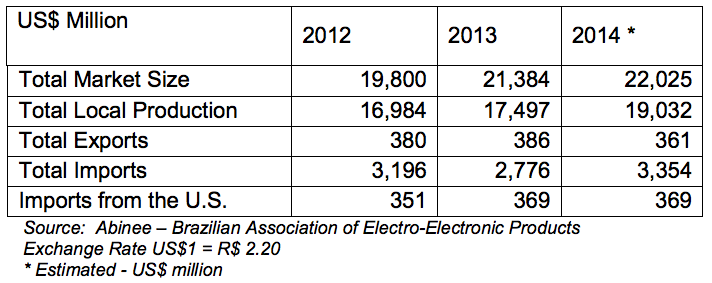
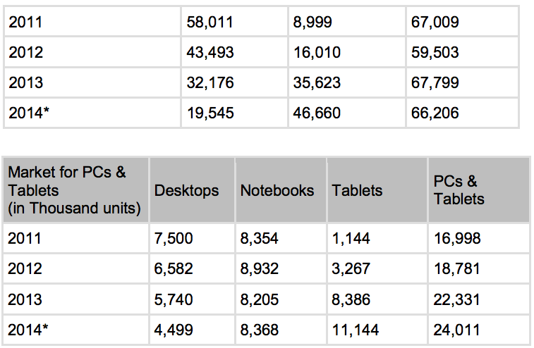

Return to top
Brazil is the second-largest IT market among emerging economies, after China; and continues its stable, consistent growth trend, particularly when compared to other BRIC countries (Brazil, Russia, India and China) relative to its size, economic strength, and growth potential.
The IT segment in Brazil remains the seventh largest market in the world; however, it is forecasted to reach fifth by 2022.

The figures in the table reflect a very positive scenario for Brazil. Among all the BRIC countries, Brazil is second just behind China in terms of investments in information technology. The 2016 Summer Olympic Games in Rio de Janeiro will also prompt further IT investment in the country to support infrastructure construction facilities, transportation, and security.
Return to top
The Brazilian Electric -Electronic Association (ABINEE) has indicated that the IT industry will continue positive growth, andin 2014 should continue as the “Year of Tablets and Smartphones”. According to ABINEE, sales growth of the entire electronic sector was driven by such new consumer items available in the market. With the increasing use of portable devices, Brazilian companies are adopting the Bring your Own Device-concept (BYOD) IT management strategy, which will also be of great benefit to the industry.
The Government of Brazil (GOB) has created mechanisms and incentives to attract manufacturers of tablets to install production plants in Brazil (Law 12.507).

Storage equipment will continue to be in demand in Brazil, as the volume of data rises. There are increasing numbers of companies seeking information and knowledge on cloud computing, Platform as a Service (PaaS) and Infrastructure as a Service (IaaS); consequently, the need of servers and storage equipment will follow. Governments and private entities use such technology for their surveillance cameras, content management for libraries and museums, as well as digitalization of the judicial system. The market for personal storage devices such as Network Access Storage (NAS) for consumers will also expand. Demand for 3-D printing is also expected to increase within the next three years according to trade sources.
Market Entry
The majority of computer distributors in Brazil are national companies; however, foreign distributors have been partnering with these existing distributors of late, in order to become more competitive and satisfy local presence requirements.
Foreign companies should consider pursuing a distribution or representation agreement with well-established local companies, who are capable of navigating the business environment in Brazil and have easier access to potential end-users. Furthermore, foreign companies interested in participating in public bids must have an established local representative.
Return to top
In addition to the benefits of manufacturing “tablets” in Brazil, since 2007 the GOB’s Ministry of Education has been investing in PROINFO, a program to promote technology as an important classroom teaching tool. The program includes installations of technology labs in the public schools, laptops for teachers and students, digital boards, projectors and tablets. The budget also allows for teacher training. In 2013, the GOB will continue to invest in the program.
Brazil is considered the fifth largest personal computer market in the world, driving Latin America’s PC market with a 41.5% share. Brazil is forecasted to continue experiencing the largest growth rate in this region, through 2014.
Brazil's trade policy has clearly favored domestic production of PCs over the importation of complete systems. Tariffs for complete PC systems remain high, and despite policy changes, the trend will likely continue, compelling foreign vendors to establish manufacturing facilities within Brazil. GOB policy also stipulates PC manufacturers need to maintain a minimum ratio of 3% locally-driven R&D investment compared to revenue. This encourages domestic manufacturers to innovate and remain competitive against foreign products.
A challenge for foreign companies will be the “Lei de Preferência” (Law of Preference – Decree 7.903/2013) that gives 25% of advantage to locally produced products when participating in public bids.
Return to top
For more information, contact Industry Specialist Patricia Marega:patricia.marega@trade.gov